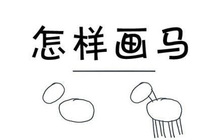
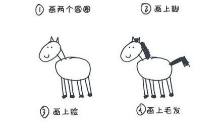
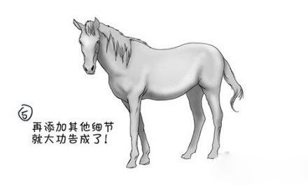

这篇文章是基于3.10.0版本的OkHttp缓存在Android系统上的使用分析，如有错误或不恰当的地方，真诚希望大家指出。也是我在博客中的第一篇文章，如有关于排版问题，也请大家不吝赐教
OkHttp缓存的基本使用：
希望在OkHttp中开启缓存，只需要在构造OkHttpClient的时候创建一个Cache对象就可以了：1
2
3
4……
builder.cache(new Cache(File directory, long maxSize));
……
builder.build();
在创建Cache对象的时候，构造器要传入两个参数：
1、directory：缓存响应存储到的文件夹；
2、maxSize：缓存响应数量最大值。
你可以将缓存的位置指定为内部存储，或外部存储（外部存储需要考虑权限相关限制，而且不晓得会不会有人将缓存设置在外部存储上）。
OkHttp缓存概况
OkHttp中的缓存功能主要由CacheInterceptor、CacheStrategy、Cache、DiskLruCache这几个类提供。
- CacheInterceptor作为OkHttp中的几个重要的拦截器之一，负责从缓存中读取数据、联网请求数据、联网验证缓存数据等等的整体流程。
- CacheStrategy具有判断缓存的响应对于新的请求是否可用等功能。
- Cache是与真正的缓存文件存储DiskLruCache打交道，并负责进行一些数据的统计，如写缓存成功次数、写缓存中断次数、网络请求次数、命中次数、请求次数。
- DiskLruCache具有将缓存写入到文件中等功能。
如果自己设计一个缓存，有哪些需要考虑的地方
在阅读源码之前，我们可以自己考虑一下，如果自己设计一个HTTP缓存的功能，它应该包含哪些基本功能和流程。
首先，要缓存响应并且当应用重新启动的时候，响应还不能消失，所以响应不能缓存在内存中，我们需要将文件持久化到设备中，作为文件进行存储是我们的一个选择。我们可以选择将所有的响应都缓存到一个文件中去，但是这样解析起来有难度，而且不利于单个响应的删除和更新，所以我们需要采用将每个响应缓存到不同的文件中去这种方式。
当我们希望在缓存中查找某个请求对应的响应的时候，我们希望可以快速定位到某个文件，而遍历缓存位置的所有文件是个不怎么高效的办法，所以我们希望在查找缓存之前，先把我们已经缓存的响应以某种方式映射到内存中的Map中去。而我们的缓存也不是无限大的，所以我们倾向于缓存一个最大数量的响应。事实上OkHttp也是这样做的，在上边的Cache中第二个参数maxSize就指定了缓存大小，也就是能缓存的响应数量最大值。那这样的话，当缓存已经达到极限，如果有新的响应需要缓存，那么我们势必会将缓存中现有的响应删除一个，而究竟删除哪一个一般是采用LRU（一种缓存替换策略）算法，也就是删除最近最久未使用的那一个。既是个Map，也支持LRU算法，那么这个Map的类型应该是个LinkedHashMap。
接下来我们就可以通过这个LinkedHashMap快速定位到缓存的响应啦。不过，就算我们获取到了缓存的响应，也不一定就直接可以使用，因为缓存的响应可能已经不可使用了，关于缓存是否可用的定义可以参考RFC7234。如果缓存的响应不可用，我们还需要联网去获取最新的响应。所以我们需要有个辅助类来判断缓存的响应是否可用。
嗯，大致的流程就是这样啦，然后我们再注意一些细节，一个HTTP的缓存就诞生啦。



哈哈，图片来自网络，侵删。
然后，我们深入OkHttp的源码，看看这些细节。